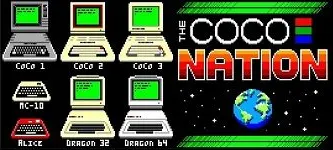

[Index]
The Coco Nation News stories for Episode 341, December 2, 2023
===================================================================
Collected by L. Curtis Boyle
Interviews schedule:
--------------------
- December 9 we have an interview with Mike Snyder, who authored tons of games
for T&D magnazine for both the Ccoo 1/2 and the Coco 3 (some are on my site
already) between 1987 and 1991. He still has his own website if you want to get
familiar with the games he wrote and think of questions to ask him.
https://www.cocoquest.com/
- January 6 we have a double interview with Doug Masten & Glen Dahlgren,
covering the Coco 3 game The Contras.
http://www.lcurtisboyle.com/nitros9/contras.html
- January 20 Glen Dahlgren comes back - he has the final book in his Chaos
series coming out, and possibly some further Coco stuff as well.
https://mysteriumstoryworks.substack.com/p/want-a-free-copy-of-the-realm-of?r=2hpgl3&utm_campaign=post&utm_medium=web
Special Guests today:
---------------------
- Erico & Luciano to talk about Retro SC show in Brazil that they were at last
weekend
- Ciaran Anscomb to talk about his SAM replacement/enhancement
Fixed the timing on his replacement SAM satellite board
https://www.facebook.com/groups/dragon32/posts/3595909727335337/
Officially released the design:
https://www.facebook.com/groups/2359462640/posts/10161055145397641/
Upcoming conventions/trade shows of interest to Coco people:
------------------------------------------------------------
While not a Coco show as you can tell by the title, "World of Commodore 2023",
Frank of RetroRewind (who is the sponsor) wanted to mention that they will be
selling Coco items at the show including CocoSDC's at the show today and
tomorrow in Mississauga, Ontario, Canada.. and with show special prices:
https://www.tpug.ca/world-of-commodore/world-of-commodore-2023/
VCF SoCal: Feb 17-18, 2024 in Orange, California
Hotel Fera - Events Center
100 The City Drive, Orange, CA 92868
https://vcfsocal.com/index.html
CocoFest: May 4-5, 2024 in Carol Stream, Illinois (near Chicago)
Holiday Inn & Suites
https://www.glensideccc.com/cocofest/
BoatFest 3: June 14-16, 2024
Social Event Space
Hurricane, WV
https://www.ticketsource.us/boatfest2024/boatfest-retro-computer-expo-2024/e-raedpb
VCF SouthWest: June 14-16, 2024 (same weekend as BoatFest, and usually has a
lot of Tandy people hanging out since that is Tandy's hometown).
Davidson-Gundy Alumni Center at University of Texas - Dallas
Dallas, Texas
https://www.vcfsw.org/
Coco 1/2/3 (and multi-platform)
-------------------------------
1) George Janssen released his next assembly language tutorial video with more
Coco 3 text screen code. It should be noted that he is also uploading the
source code to his channel on the Coco Discord (Programming and Development ->
assembly-with-georgej):
https://youtu.be/oKE_q3uNAsc?si=ePaR_SgmA5wuYnpV
And part 2 (last part of using ROM calls for high res text screens):
https://youtu.be/U3qytaqGO1o?si=G8H0Xsyj45tmQsR_
And Part 3 (Using Objects for the high res text screen):
https://youtu.be/StWBLX4O2No?si=RWA7IPXgTRYEm9pW
Also, as we have noted before - you can get the source listings for George's
lessons from The Coco Discord in the #assembly-with-georgej
George's channel on Discord:
https://discord.com/channels/301741082600013824/844380142289813534
2) CocoTown did a video on working to fix MAME's debugger, and also delves into
the programming trickery used by DragonFire to get multiple color sets active
in the same scanline. He does some patches to MAME and tests things on Coco
1/2's, Dragons and the Coco 3 - it's all interconnected in MAME:
https://youtu.be/IFB1bSU0T1s?si=-reoZR9kXav4zXtR
3) For the technically minded, Hacker News had a link and discussion to an
article on "The Boston Diaries" website, which talks about writing a maze
drawing program in assembly language for the Coco 1/2, and trying to debug it.
It then goes into a discussion of whether using "Unit Testing" methods should
apply to old 8 bit CPU's. Thanks to James Jones for posting the link in the
Coco group on Facebook:
https://boston.conman.org/2023/11/27.1
4) Thomas Cherryhomes has posted the source code for his FSK coder to convert
CAS format files (which are just data) to audio for the #esp32 DAC, as part of
getting Fujinet onto a Coco:
https://www.facebook.com/groups/2359462640/posts/10161051530062641/
Source link on github:
https://github.com/tschak909/cocoencode
5) Simon Jonassen posted a couple of screenshots of his web-based graphics
editor, this time showing the 2 color sets using the same graphic:
https://www.facebook.com/groups/2359462640/posts/10161048653352641/
He also posted a video showing interaction with the web page and it's menus:
https://www.facebook.com/groups/2359462640/posts/10161056600292641/
6) A retro computer show happened last weekend in Wisconsin Rapids by the
Wisconsin Computer Club, where they had an open house including Coco's:
https://www.facebook.com/groups/2359462640/posts/10161047596877641/
7) EJ Jaquay posted a new update for VCC (version 2.1.8.2). This fixes the TFM
bug we mentioned a week or two ago, as well as some other fixes & additions: DP
register properly displayed in the debugger, "Set PC" button added to Debugger
Processor window, file exit bug fix & documentation updates:
https://github.com/VCCE/VCC/releases
8) MimsyWasTheBorogove channel on YouTube put up a short video showing the Coco
3 palette demo that was include in the Coco 3 BASIC manual:
https://youtu.be/rYe3CfWensY?si=OFimNqsqJ1VLNipN
He also included the Coco 1/2 compatible page-flipping Yo-Yo demo as well,
using 8 PMODE 0 pages to smoothly and quickly show a YoYo in action:
https://youtu.be/py-yYJAJwys?si=8rrxqwf-EsXVae4u
9) Tricob1974 put up a video on YouTube of his new random maze generator called
Maze Creator. This is an updated, faster version of Maze Make (Pretty sure this
is Richard Kelly from the Facebook Coco group):
https://youtu.be/EBXsARCTPWk?si=bmBQag4woPVCxuX2
Download link from the Color Computer Archive:
https://colorcomputerarchive.com/repo/Disks/Games/Maze%20Creator%20v1.00%20%28Retro%20Rick%29.zip
10) Jim Mullis (who is working on the Coco 3 Super Friends game) has posted a
video of the demo for GrafExpress 2.0 that came with the package (it's an add
on for Coco 3 BASIC to add windowing, sprites, music, faster graphics, etc.).
For those who haven't seen/heard it:
https://youtu.be/p-MAecRSK7g?si=hKj_y2mpT3Ia-wU5
(I will note that it also supports 256 colors on composite monitors at a lower
resolution, and there is a demo for that as well not included here. There is
also some sound distortion near the end of the video that does not happen
normally.)
11) The Break Key on Youtube did a video showing how to build a cassette cable
for the Coco from scratch. This is a brand new channel (he mentions that he is
planning a Drivewire cable next), so check his page out, leave some comments
and subscribe:
https://youtu.be/Y41wW8HYHJg?si=JU0LmppsVjnA_JY7
MC-10
-----
1) Earlier this week Jim Gerrie released a program for the MC-10 specifically
for American Thanksgiving:
https://www.facebook.com/groups/731424100317748/posts/6760761707383927/
2) Ruben Aparicio on the MC-10 group on Facebook posted how he updated his
Alice to be "internationalized" to run NTSC:
https://www.facebook.com/groups/731424100317748/posts/6757728354353929/
Dragon 32/64
------------
1) As promised last week, Richard Harding has posted the next old TV newscast
covering Dragon Data to the Dragon group on Facebook - this time when the
receivers were called in:
https://www.facebook.com/groups/dragon32/posts/3597199810539662/
2) Phil Harvey-Smith posted an update on this progress on the DragonVGA (VGA
output), where it is getting closer to handling precise timing used by some
programs to changes graphics modes/color sets on a scanline basis:
https://www.facebook.com/groups/dragon32/posts/3594122037514106/
Game On news (all Coco related platforms):
==========================================
1) Jim Gerrie ported a 4K version of Othello called "O-Jello" originally
written by Clyde Perkins in 1980 for the Bally Astrocade (with it's Bally BASIC
add on) for The Arcadian Volume 2, Number 5. It has both 1 and 2 player modes
(quite a feat for 4K!).
NOTE: If you grabbed it when he first posted it, be aware that he fixed a bug
and re-released it:
https://youtu.be/_iOyRy_h8Xg?si=yuXejeznIJSSFuog
He also ported a 1977 version of Blackjack originally on a SOL computer. He
mentions in the comments that the dealer has "lots of personality" in this one:
https://youtu.be/QmNBob6Tdek?si=JornVES2nr-5B-Tk
2) Elksoft has released a modern port (including source code) of the Coco
version of Imagic's Demon Attack, with optional enhanced colors, music
soundtrack, etc. It is written in BlitzBasic and works on Windows machines (it
mentions Windows 95/98, 2000, XP and Vista for sure):
Website:
http://www.eiksoft.com/
Video:
https://youtu.be/OoxkhKE61Ow?si=dneq12Wj54t1ng0d
3) Brown Robin Bird on YouTube revisited Sock Master's Donkey Kong Remix, this
time making it a video rather than a livestream (that didn't go too well a few
months ago). Much better this time, showing several screens:
https://youtu.be/RWxmIVxYuOo?si=21eLY64zBHhC0e5F
4) A Gaming Channel by L.R. posted some more Coco high score attempt videos on
XRoar (first time in some months), including:
Zaxxon, Thexder, Temple of ROM, Super Pitfall, Space Assault, Whirlybird Run
and Skiing:
(Scroll down for most recent)
https://www.youtube.com/playlist?list=PLNrXEtRb7Lho_r6tkFG2FeQlVncB4m-MA
He also did a ton of Dragon ones as well:
https://www.youtube.com/playlist?list=PLNrXEtRb7LhpnEWcnhYNxa8WNlO0QK2T9
5) Chronologically Gaming covered some more Coco games this week, including one
of my favorites of all time, Phantom Slayer:
Phantom Slayer (both Coco and Dragon versions), Realm of Nauga (from
Chromasette), and Scarfman (Dragon):
https://youtu.be/M96i3zPYK5k?si=1ZKSNMGNEAY4rJWY
6) Retro365 put up 2 videos that are not strictly Coco, but shows the rarer IBM
PC CGA graphics version of Calixto Island & The Black Sanctum games from Mark
Data Products. These were ported from the Coco graphics originals to the IBM
PC.
The Black Sanctum:
https://youtu.be/4ETNszbkDw0?si=va_QqMcNxw2wrN7j
Calixto Island:
https://youtu.be/m5AnEIHkGCM?si=MJ978_K5qr7LGebE
Get connected with more of the CoCo, Dragon and MC-10 community here:
=======================================
https://thecoconation.com/community/